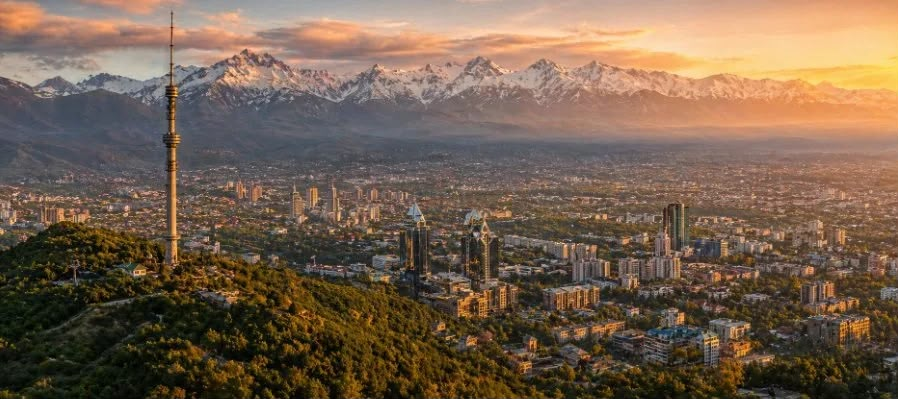
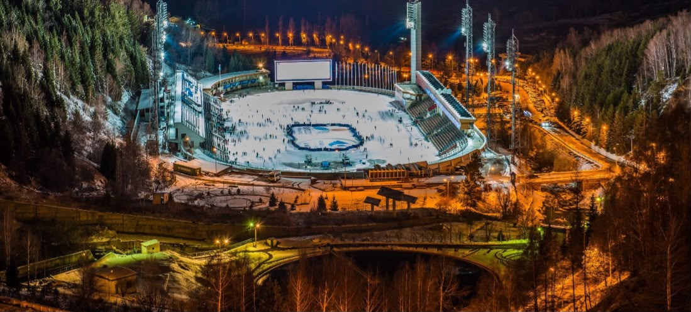
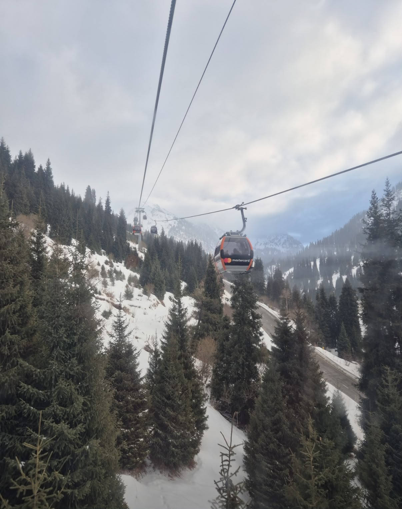
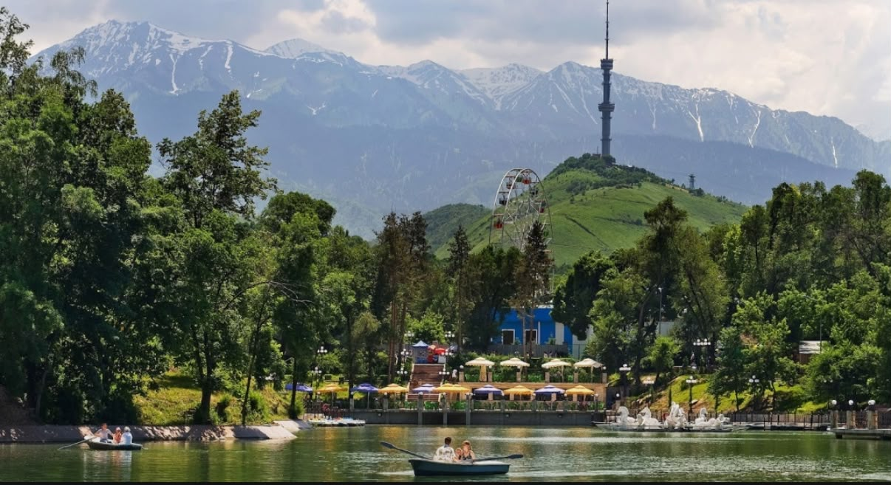
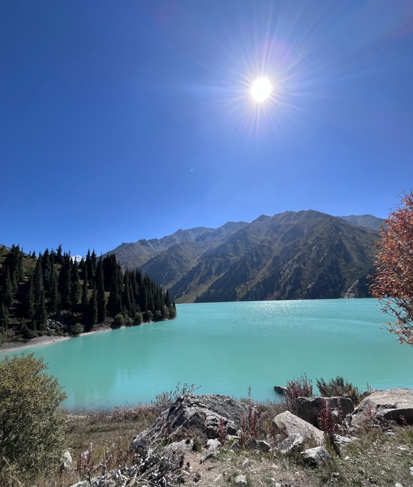

Mountain Hiking
Explore the beautiful mountains around Almaty and enjoy fresh air and amazing views.
DISCOVER KAZAKHSTAN
Explore the beautiful city of Almaty, surrounded by mountains, nature and unforgettable places.
WELCOME TO ALMATY
Almaty is one of the most popular destinations in Kazakhstan. The city combines modern life, beautiful nature, culture and amazing mountain views.
It is a great destination for people who enjoy sightseeing, outdoor activities, food and discovering new places.

PLACES TO VISIT

Medeu is a famous mountain skating rink located near Almaty. It is surrounded by beautiful mountains and fresh air. Visitors can enjoy the scenery and spend time in nature.
Learn More
Shymbulak is a popular mountain resort near Almaty. Visitors can enjoy beautiful mountain views, fresh air and outdoor activities.
Explore
Kok-Tobe is one of the most popular viewpoints in Almaty. Visitors can enjoy a panoramic view of the city and take beautiful photos.
View Place
Big Almaty Lake is a beautiful mountain lake surrounded by the Trans-Ili Alatau mountains. It is known for its amazing natural scenery.
DiscoverTHINGS TO DO
Explore the beautiful mountains around Almaty and enjoy fresh air and amazing views.
Walk around the city center, visit parks and discover the modern side of Almaty.
Try traditional Kazakh dishes and discover local food culture in Almaty.
Take beautiful photos of the city, mountains and natural landscapes.
WHAT TO DO
Almaty is a good choice for travelers who want to combine city life with nature. You can visit cultural places during the day and enjoy the mountains later.